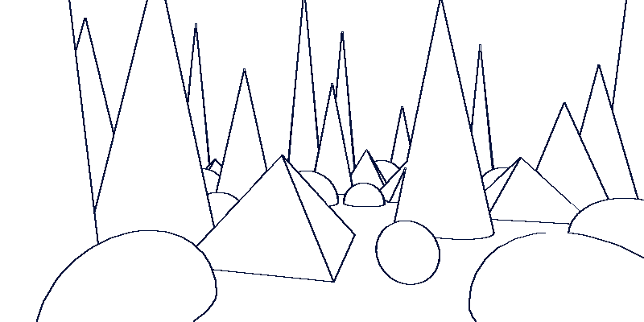

Simple Outline
Detects edges in the image using a Sobel-style filter and draws an outline based on a configurable threshold. Edges can be detected from the original image, scene depth, scene normals, or an explicit source texture.
| Property | Range | Description |
|---|---|---|
| Outline Source | {0, 1, 2, 3} | Selects the source used for edge detection. See Outline Sources below. |
| Jump Size | [0, ∞) | Multiplies the sampling offset. Larger values produce thicker, coarser outlines. |
| Edge Factor | [0, ∞) | Scales the detected edge strength before thresholding. Used to make threshold tuning easier. |
| Threshold | [0, ∞) | Edge strength above which a pixel is considered part of an outline. |
| Line Color | 🎨 | Color used to draw detected edges. Alpha controls how much it blends over the original image. |
| Background Color | 🎨 | Color used where no edge is detected. Alpha controls blending with the original image. |
Outline Sources
- Camera Color – Uses the rendered image.
- Alternate Texture – Uses an explicitly provided texture (
outlineSourceTexture) as the edge source. - Depth Texture – Detects edges from scene depth.
- Normals Texture – Detects edges from scene normals.
Using Depth and Normals Textures
This effect can derive edges from scene depth or scene normals, but the setup differs depending on the render pipeline.
Built-in Render Pipeline
When using Depth Texture or Normals Texture as the outline source, you must ensure the camera generates the required textures.
Options:
Set the camera’s
depthTextureModemanually:Depthfor depth-based outlinesDepthNormalsfor normal-based outlines
Or add the
RequiresDepthNormalscomponent to the camera, which configures this automatically.
If the required textures are not enabled, depth- or normal-based outline modes will not work.
Universal Render Pipeline (URP)
Nothing is required to enable depth or normals textures in URP, as this is handled internally.
However, sometimes the normals don't work in the editor. Playing the game usually fixes this.
Tip
- To draw outlines over the original image, set
Background Coloralpha to0andLine Coloralpha to1. - If the outline is hard to tune, start with
Edge Factor = 1, find usable lower and upper threshold bounds, then adjustEdge Factorto bring the threshold into a convenient range. - You can render out an
IDMapand use it as theAlternateTexturesource to outline objects. - The Jump distance is a cheap way to control outline thickness, but may produce artifacts on thin features. A better approach is to use a Min filter (for dark outlines) or Max filter (for light outlines) after the outline pass.
